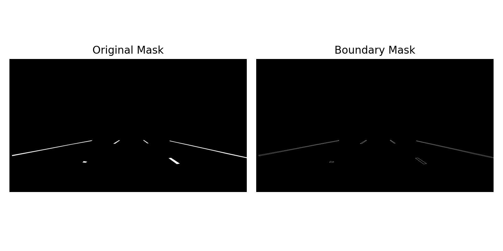

When you look at a picture, what do you notice first? Do bright colors or patterns draw your attention? Do your eyes go straight to the center, or do you take in the surroundings first?
Analyzing what we see as humans is an almost automatic process. We look at something, take a few seconds to analyze, but very quickly determine what we are looking at and understand its meaning almost instantly.
As technology has advanced, computers have started to mimic this ability, taking in images, analyzing them, and assigning meaning in a way that begins to resemble human vision. However, this process is nowhere near as automatic for computers as it is for humans. Several computational methods give computers the ability to analyze images or scenes. One key method is feature extraction.
What is Feature Extraction?
When a computer takes in an image, it is essentially receiving a pile of unstructured data in the form of pixels. Feature extraction transforms this data into meaningful features and objects that computers can analyze and assign meaning to.
While this post focuses on feature extraction from images, it is important to note that feature extraction can also be applied to other forms of quantitative data or even text and is not limited to images. A few common image-based applications of feature extraction include autonomous vehicle navigation, extracting features from EEG or MRI data to help physicians detect diseases, and detecting facial features for Face ID on a phone.
The bigger question, however, is how do computers know how to do this? How exactly do they detect these features? There are a variety of methods used for feature extraction including edge detection, corner detection, blob detection, and texture analysis. Edge detection identifies boundaries within an image to detect objects. Corner detection identifies areas in an image where the intensity drastically changes in multiple directions. This indicates the presence of corners or boundaries between edges which can be valuable for image alignment or object tracking tasks. Blob detection detects regions in an image that exhibit significant differences in properties such as brightness, color, or texture compared to the surrounding regions. Regions with these significant differences are called “blobs” and detecting them can be useful for tasks like object recognition or image segmentation. Texture analysis quantifies and characterizes the spatial arrangement of pixel intensities in an image. This can be a key component for segmentation and recognition tasks.
Of these methods, edge detection plays a particularly important role in feature extraction by simplifying images and retaining only key structural information. This allows subsequent tasks, such as object recognition or image segmentation, to be performed more efficiently, since the computer no longer needs to process every pixel in the image.
Edge Detection: Background, Purpose, and Value
Edge detection is a fundamental low level task in image analysis that locates sharp changes in pixel intensity. These discontinuities typically correspond to object boundaries, surface folds, or depth shifts. The purpose of edge detection, then, is not to produce a final scene interpretation but to distill an image into a sparse structural sketch that retains only the most informative contours. By discarding uniform regions, an edge map dramatically reduces the volume of data that subsequent processing must handle while preserving shape and layout. In this sense, edge detection acts as an abstraction between raw sensor output and higher level operations such as segmentation, object recognition, and motion tracking.
The practical value of edge detection becomes apparent across a wide range of engineering and scientific domains. Industrial measurement systems use edges to extract dimensions with sub pixel accuracy, autonomous vehicles track lane markers and obstacle outlines from edge maps that have already suppressed irrelevant road texture, and medical imaging relies on clean organ and lesion contours for both quantification and visualization. Despite these broad successes, the task continues to involve stubborn trade offs. Any real image presents noise, low contrast, and uneven illumination, meaning that no single sensitivity setting will recover all genuine edges while rejecting all false ones. It is precisely this tension that has driven the evolution of edge detection methods from simple gradient operators to carefully staged algorithms like the Canny detector, which addresses the problem through a sequence of steps including non maximum suppression and hysteresis. Understanding this background makes clear why such design decisions, which can appear elaborate in isolation, arose from the practical demands of working with natural imagery.
Edge Detection Methods
Canny Edge Detection
The Canny operator, introduced by John Canny in 1986, remains a foundational multi-stage algorithm for edge detection. It is constructed around three explicit design objectives: achieving a high signal-to-noise ratio, ensuring good localization so that marked edges lie as close as possible to the actual intensity transitions, and guaranteeing a single response per true edge to avoid thick or doubled contours. For these reasons, it still serves as a common benchmark against which newer methods are evaluated. Typical applications of Canny are lane detection, object recognition, as well as general image segmentation.
Steps
- Noise reduction with a Gaussian filter. A Gaussian blur is applied first to suppress spurious intensity variations that would otherwise produce false edges. The smoothing kernel is often chosen as 5×5 with a standard deviation σ of around 1.4 and is normalized so that its elements sum to 1. Selecting σ involves a practical trade‑off: a small value retains fine detail but leaves some noise intact; a large value removes noise aggressively but can blur genuine edges.
- Gradient calculation. Sobel operators are then used to estimate intensity gradients in the horizontal and vertical directions. The Gx kernel responds strongly to vertical edges, while Gy captures horizontal edges. From these two filtered images, both the gradient magnitude (edge strength) and the gradient direction (edge orientation) are computed, typically at every pixel.
- Non‑maximum suppression. The raw gradient magnitude image often contains ridges several pixels wide around true edges. To thin these responses to a single‑pixel width, the algorithm first quantizes each pixel's gradient direction into one of four principal orientations (0°, 45°, 90°, or 135°). It then suppresses any pixel whose magnitude is not a local maximum compared with its two immediate neighbors along that direction. This step yields a much sharper edge map.
- Double thresholding. Two thresholds, a high and a low value, are applied to the suppressed gradient magnitudes. Pixels above the high threshold are classified directly as "strong" edges; those below the low threshold are discarded as non‑edges. Intermediate pixels form a "weak" class whose final status is determined in the next stage.
- Edge tracking by hysteresis. Weak pixels are retained only if they are connected—directly or through a chain of other weak pixels—to a strong edge pixel. Isolated weak fragments, which often arise from noise, are eliminated. This connectivity logic is what truly distinguishes Canny from simpler threshold‑based methods, allowing the algorithm to extend faint but genuine edge segments while clearing away scattered false positives.
Sobel Edge Detection
The Sobel operator is a gradient‑based method that emphasizes regions of high spatial frequency through a pair of 3×3 convolution kernels. One kernel detects horizontal intensity changes, the other vertical changes, and the two are simply rotated versions of each other. While Sobel is computationally light and easy to implement, it is more susceptible to noise than Canny and does not inherently produce thin edges.
Steps
- Apply the two Sobel kernels. The image is convolved separately with the horizontal kernel Gx and the vertical kernel Gy. This yields two component images that measure intensity variation in each respective direction.
- Compute gradient magnitude. The two components are combined into a single edge‑strength map, classically via the Euclidean norm |G| = √(Gx² + Gy²). In practice, the approximation |G| ≈ |Gx| + |Gy| is often used because of its lower computational cost while still giving acceptable results.
- Compute gradient direction (optional). If edge orientation information is required, it can be obtained from θ = arctan(Gy / Gx). This step provides directional data that can be useful in later processing, though many applications do not need it.
- Threshold to extract edges. A threshold is applied to the magnitude image so that only pixels with sufficiently strong responses are marked as edges. Because the Sobel kernel itself introduces a small amount of perpendicular smoothing, the resulting edges are typically several pixels wide. A separate thinning operation must be applied if single‑pixel edges are desired. The main difficulty in practice is that on noisy images it is often impossible to find a single threshold that preserves all genuine edges while eliminating all noise responses—a limitation Canny was specifically designed to address.
Random Forest
It should be noted at the outset that Random Forest is not an edge detection technique in the classical sense. Rather, it is a multi purpose learning algorithm for classification and regression on structured data. It can, however, be adapted for edge detection by training a model to classify individual pixels as "edge" or "non‑edge" based on local feature vectors (e.g., gradient, texture, and intensity statistics). In this sense, it represents a learned rather than a classical filtering approach. Its inclusion here serves to highlight that family of methods.
Random Forest is an ensemble method that aggregates the predictions of many independent decision trees. Each tree is built from a different bootstrap sample of the data, and at each split only a random subset of features is considered. The final output is obtained by majority vote (classification) or averaging (regression). The technique relies on bagging (bootstrap aggregating), not boosting, to reduce variance and improve generalization.
Steps
- Bootstrap sampling (bagging). Multiple random samples are drawn from the original dataset with replacement. This means a given record may appear more than once in a sample while others are left out entirely. The procedure injects diversity among the trees and helps prevent any single tree from overfitting to the full dataset's peculiarities.
- Random feature selection at each split. When constructing a tree, the decision of how to split a node is made by searching over only a random subset of the available features. This prevents a few dominant features from dictating the structure of every tree and ensures that different trees learn to exploit different signals in the data.
- Train many decision trees in parallel. A separate decision tree is built from each bootstrap sample. Since the trees are generated independently, the process scales well with parallel computation. Approximately one‑third of the observations are left out of each bootstrap sample; these out‑of‑bag instances can serve as an internal validation set to estimate generalization performance without requiring a separate hold‑out partition.
- Aggregate the predictions. For classification tasks, the ensemble's output is the majority vote among all trees. For regression, it is the arithmetic mean of the individual tree predictions. This aggregation is what reduces variance and yields a model that is generally more accurate and more stable than any single decision tree.
Current Applications of Edge Detection
Edge detection is used in many computer vision applications, including medical image analysis, autonomous driving, object recognition, facial detection, and quality control in manufacturing.
In each of these applications, edge detection helps reduce complex visual data into simpler structural information that can be used for further analysis.
Edge detection has a multitude of real-world usage, as it extracts structure from raw images. In today age, it is seen commonly in autonomous driving and advanced driver assistance systems, such as in Tesla and Polestar systems. Canny is a common choice because it delivers edges that are clean and well localized for road scenarios with high contrast without requiring training data, meaning it is perfect for real-time usage. It is also commonly used in medical imaging, particularly for MRI analysis; it relies on edge maps to highlight tissue boundaries and anatomical features for doctors to make diagnosis's. In medical imagining scenarios, noise robustness becomes especially crucial, which is why a model like Random Forest can justify its extended runtime and resource usage. The same correlation between speed and accuracy occurs in face recognition as well, where systems like Apple's Face ID use Canny for quick detection and reserve learned methods for the final verification steps in processes where precision matters more than speed. Beyond these examples, edge detection supports satellite and remote sensing pipelines that map roads and railways, document scanning, optical recognition, robotic vision, industrial quality inspection, and virtually any object detection or tracking framework. In practice, the tradeoffs among accuracy, noise robustness, and runtime are what steer the selection among different techniques for a given application.
Method Comparison and Analysis
Experimental Setup
To evaluate edge detection performance, we applied Canny, Sobel, and Random Forest-based edge detection models to a variety of images from three different application types: Facial Recognition, Medical Imaging, and Lane detection.
Three different datasets with images and pre-generated segmentation masks were collected for the needed applications. The segmentation masks provided in these datasets were fully filled masks, meaning the entire region of the object was filled in. These segmentation masks were used as a comparison for the image detection outputs to evaluate accuracy. However, boundary masks with outlines needed to be generated in order to accurately compare these segmentation masks to edge detection outputs. To do this, an erosion operation was used to slightly shrink the objects in the segmentation masks. The eroded objects were subtracted from the original object to leave only the outer edges of labeled regions.
The image below shows an example of a boundary mask generated from a filled in segmentation mask:

Next, the three chosen edge detection methods were applied to the original images from the dataset. This produced an edge map for each image which was then compared to the pre-generated boundary masks. These two images were compared pixel-by-pixel to evaluate accuracy and efficiency.
The following evaluations were performed:
Precision Evaluation: How many detected edges were correct? Were there false positives?
Recall Evaluation: How many edges were correctly detected? Were any edges missed?
F1 Score Evaluation: How well did the method correctly detect true edges and avoid false positives?
Intersection over Union (IoU) Evaluation: How much overlap was there between the predicted edges and the original boundary mask?
Edge Thickness Evaluation: How clean are the predicted edges? Are they thin and clean? Or messy and thick?
Run Time Evaluation: How long did each method take in milliseconds?
Results from these evaluations were put into an excel spreadsheet and bar graphs were generated for analysis and discussion.
Analysis
Overall Performance (F1 Score)

Figure: F1 Score comparison across application domains.
The F1 score combines precision and recall to evaluate how effectively each method detects correct edges while minimizing false positives and missed edges. Across all three application types, performance varied based on image complexity or application type.
For MRI images, F1 scores were relatively similar across methods, with Canny (0.044) and Random Forest (0.044) slightly outperforming Sobel (0.038). For lane detection, F1 scores were higher overall, with Sobel achieving the best performance at 0.098, followed by Random Forest (0.077) and Canny (0.075). In facial recognition, all methods performed similarly with low F1 scores, though Sobel again produced the highest value (0.037).
Overall, Sobel achieved the highest F1 scores in two of the three applications. However, the differences in averages for each application reinforce how image complexity can quite easily effect edge detection accuracy.
Spatial Accuracy (IoU)

Figure: IoU comparison across application domains.
The Intersection over Union (IoU) metric measures the overlap between detected edges and the pre-generated boundary masks, providing a stricter evaluation of spatial accuracy.
Across all application types, IoU scores followed similar trends to F1 scores but remained lower overall due to the strict overlap requirement. Sobel achieved the highest IoU in both facial recognition (0.019) and lane detection (0.052), while Canny performed best for MRI (0.023).
These results, when considered alongside F1 results, indicate that sobel seems to be a reliable edge detection method accross multiple different image complexities. However, Canny may be more ideal for medical imaging applications instead of lane detection or facial recognition.
Precision

Figure: Precision comparison across application domains.
Precision measures the proportion of detected edges that are correct. Across all datasets, precision values were relatively low, indicating that there were many detected edges that were false positives.
Sobel consistently achieved the highest precision across facial (0.023) and lane (0.053) datasets, while Canny and Random Forest both outperformed sobel and achieved scores of approximately 0.024.
Recall

Figure: Recall comparison across application domains.
Recall measures how many true edges were successfully detected. Sobel significantly outperformed other methods across all datasets, particularly in lane detection, where it achieved a recall score of 0.787.
This indicates that Sobel is highly effective at capturing edge information but tends to detect more pixels as edges, which causes thicker edge outputs. Canny and Random Forest, however, showed lower recall which reflects a more conservative edge detection behavior.
Edge Thickness Analysis

Figure: Edge thickness comparison across application domains.
Edge thickness measures how wide the detected edges are, providing information on the level of detail captured by each method.
Sobel produced significantly thicker edges across all datasets, particularly in lane detection (16.27), compared to Canny (9.69) and Random Forest (9.33). This explains its higher recall and F1 scores, as more pixels are classified as edges.
In contrast, Canny consistently produced thinner, more precise edges, which contributes to better localization but slightly lower recall.
Computational Efficiency (Runtime)

Figure: Runtime comparison across application domains.
Runtime analysis highlights a major difference in computational efficiency between methods.
Canny was the fastest method across all datasets, with runtimes under 3 ms. Sobel was slightly slower but still efficient, with runtimes below 30 ms. In contrast, the Random Forest-based method was significantly slower, reaching up to 8895 ms for lane detection.
Despite similar performance to Canny, the Random Forest approach introduces a substantial computational cost, making it less suitable for real-time applications.
Is There an Ideal Method?
There is no single ideal edge detection method for every situation. The results show that both accuracy and efficiency vary depending on image complexity and application. Traditional methods like Sobel and Canny achieve similar levels of accuracy while maintaining significantly lower runtimes compared to the Random Forest-based approach, making them more practical and efficient choices for most edge detection tasks.
Traditional methods like Sobel and Canny are useful when speed and simplicity are important, while machine learning approaches may be better when the task requires adaptation to complex image patterns.
Key Takeaways
Edge detection is a key component of feature extraction, enabling computers to analyze complex images by identifying important structural boundaries. There are multiple approaches to edge detection, including both traditional methods and machine learning-based models. When evaluated on a limited dataset, traditional methods such as Sobel and Canny appear to outperform machine learning approaches like Random Forest in both accuracy and efficiency. However, a major advantage of machine learning models is their ability to improve with training and optimization. As computer-based image analysis becomes increasingly important, further development of machine learning methods may lead to higher accuracy and more efficient performance, making them valuable tools for future applications.
By comparing Sobel, Canny, and Random Forest edge detection, we can better understand how different computer vision methods approach the challenge of teaching computers to see, and how this ability can continue to be improved in the future.
References
- GeeksforGeeks. 2025. Implement Canny Edge Detector in Python using OpenCV. (July 31, 2025). Retrieved April 26, 2026 from https://www.geeksforgeeks.org/machine-learning/implement-canny-edge-detector-in-python-using-opencv/
- OpenCV. Canny Edge Detection. OpenCV 4.x Documentation. Retrieved April 26, 2026 from https://docs.opencv.org/4.x/da/d22/tutorial_py_canny.html
- Zargul Ansari. 2025. The Canny Edge Detector: Mathematical Foundations and Implementation of a Computer Vision Cornerstone. Medium. (May 11, 2025). Retrieved April 26, 2026 from https://medium.com/@zar_373/the-canny-edge-detector-mathematical-foundations-and-implementation-of-a-computer-vision-c47e83d6e792
- GeeksforGeeks. Sobel Edge Detection vs. Canny Edge Detection in Computer Vision. Retrieved April 26, 2026 from https://www.geeksforgeeks.org/computer-vision/sobel-edge-detection-vs-canny-edge-detection-in-computer-vision/
- R. Fisher, S. Perkins, A. Walker, and E. Wolfart. 2003. Sobel Edge Detector. Hypermedia Image Processing Reference (HIPR2), University of Edinburgh. Retrieved April 26, 2026 from https://homepages.inf.ed.ac.uk/rbf/HIPR2/sobel.htm
- GeeksforGeeks. 2025. Random Forest Algorithm in Machine Learning. (December 23, 2025). Retrieved April 26, 2026 from https://www.geeksforgeeks.org/machine-learning/random-forest-algorithm-in-machine-learning/
- Mayur Kulkarni. 2026. Random Forest Algorithm in Machine Learning: Explained with Use Cases. Xoriant Blog. (February 24, 2026). Retrieved April 26, 2026 from https://www.xoriant.com/blog/random-forest-algorithm
- OpenCV Documentation – Edge Detection Methods. Retrieved from https://opencv.org/
- Scikit-Image Documentation. Retrieved from https://scikit-image.org/
- CelebAMask-HQ Dataset. Retrieved from https://www.kaggle.com/datasets/ipythonx/celebamaskhq
- Lane Detection Dataset. Retrieved from https://www.kaggle.com/datasets/mehmetokuyar/line-segmentation
- MRI Brain Imaging Dataset. Retrieved from http://preprocessed-connectomes-project.org/NFB_skullstripped/